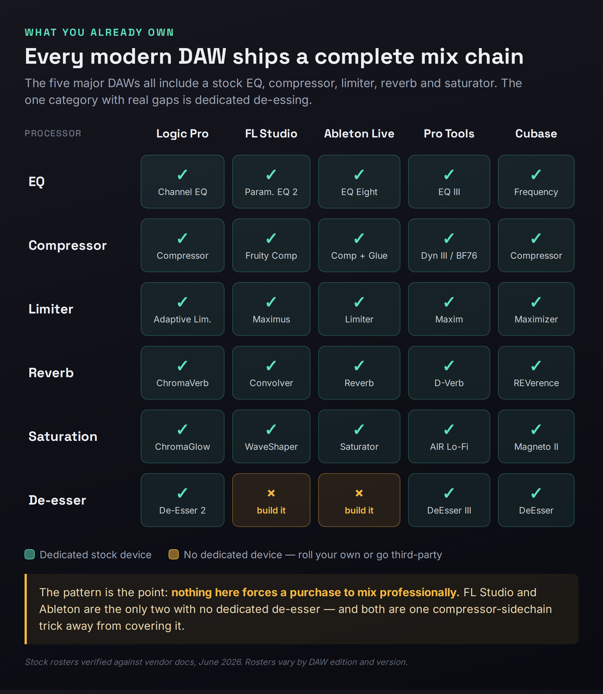
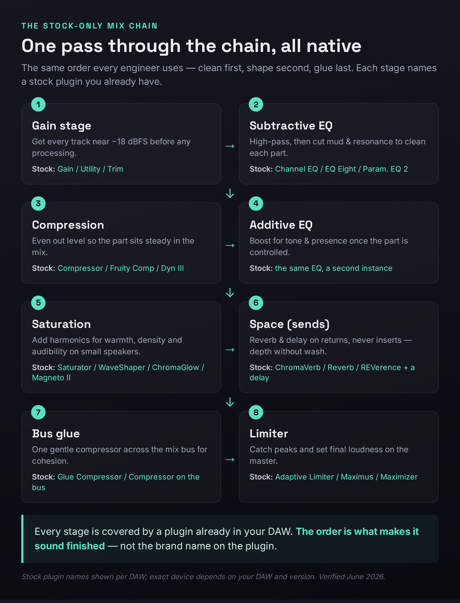
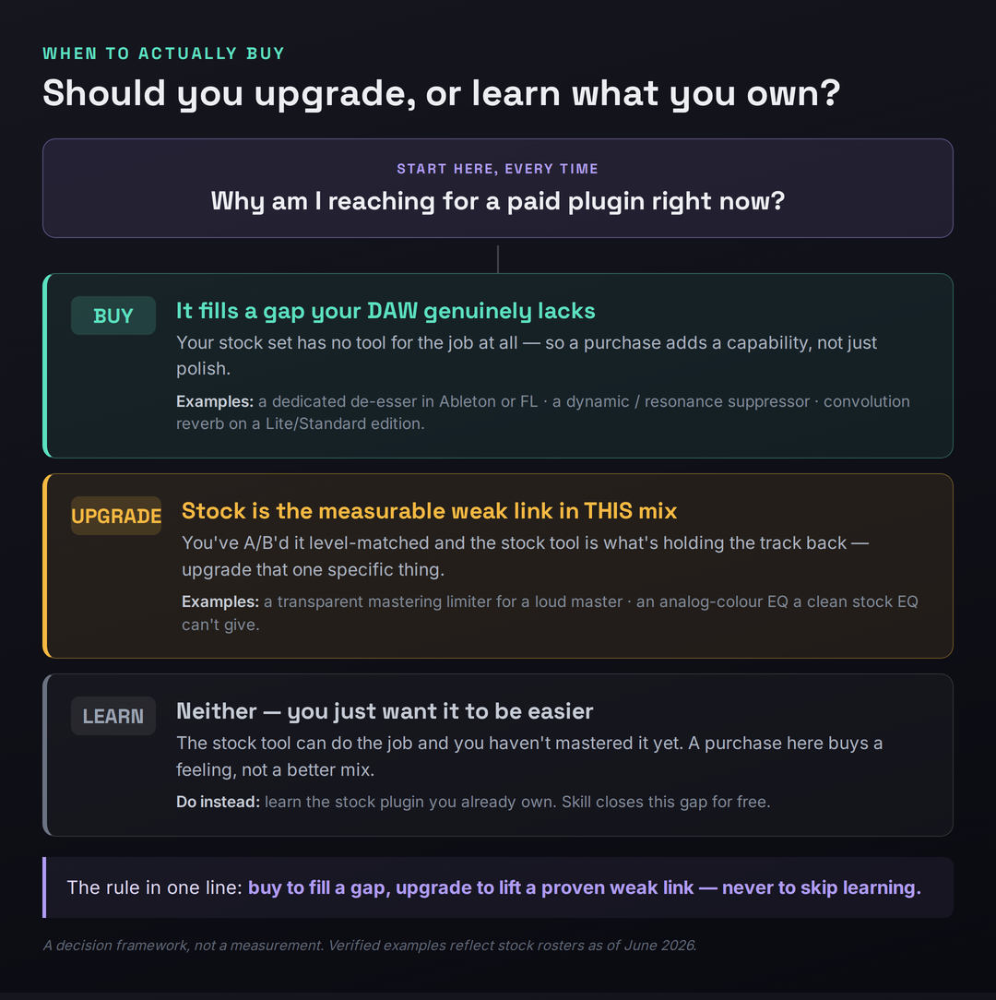

There is a moment every producer hits, usually a few months in, that feels like a wall. You have learned your DAW, you can finish a song, and yet your mixes sound a half-step amateur next to the records you love. So you do what the internet has trained you to do: you start shopping. A thread says you need FabFilter. A video says real engineers use Waves. A forum insists nobody gets a pro low end without a $300 dynamic EQ. The implication is always the same — the gap between your mix and a great one is a gap you can close with a credit card. This page exists to tell you, with evidence, that it usually isn’t, and to show you exactly how to get a professional mix using only the plugins your DAW already shipped with.
Here is the claim, stated plainly so the rest of the article can earn it: a competent engineer working with nothing but stock plugins will beat a beginner with a $2,000 plugin folder, every time, because the thing that separates an amateur mix from a professional one is decisions, not tools. Where to cut, how much to compress, what to leave alone, how loud to push the master, which element wins each frequency band — those choices are made by the person, not the plugin. Your DAW already includes a parametric EQ, one or more compressors, a limiter, reverb, delay, saturation, gating, metering, and a stack of instruments. Logic Pro alone ships over seventy stock plugins commonly valued at more than a thousand dollars in third-party equivalents. The complete toolkit is sitting in your effects menu right now. What follows is how to use it, where it genuinely runs out of road, and the one honest signal that tells you it’s time to spend money.
Yes — you can mix a fully professional track with only the plugins your DAW shipped with. Every modern DAW includes EQ, compression, limiting, reverb, delay, and saturation, which is a complete chain. The skill gap, not the plugin folder, is what separates amateur from pro mixes, so learn the stock tools before you buy anything. Reach for a third-party plugin only to fill a gap your DAW genuinely lacks (like a dedicated de-esser in Ableton or FL) or to upgrade a specific weak link you can actually hear — never as a substitute for learning what you own.
The Truth Nobody Selling Plugins Wants to Lead With
Walk into any plugin marketplace and the message is engineered to make you feel under-equipped. Every product page describes a problem you didn’t know you had and a sound you’re apparently missing. This isn’t a conspiracy; it’s just how a $1.5-billion plugin industry has to talk to grow. But it quietly trains a belief that does real damage to new producers: the belief that quality lives in the tool. It doesn’t. Quality lives in the thousand small judgments an engineer makes across a mix, and those judgments transfer perfectly across plugins. The same person who can make a track sound finished in stock Ableton will make it sound finished in Pro Tools with Avid plugins, in Logic with Channel EQ, or in a borrowed copy of FL Studio — because what they’re carrying between sessions is not a plugin folder, it’s an ear and a method.
The phenomenon has a name in producer circles: GAS, or gear acquisition syndrome, the compulsive sense that the next purchase is the one that finally unlocks your sound. It is seductive precisely because buying is easy and learning is hard. Spending forty dollars on a saturation plugin takes thirty seconds and feels like progress; spending forty hours learning how saturation actually behaves on a snare feels like work and offers no dopamine hit at checkout. So producers reach for the credit card to solve what is fundamentally a skill problem, and then wonder why the new plugin didn’t fix the mix. It couldn’t. A compressor you don’t understand makes a worse mix than a compressor you do, regardless of which costs more, because compression is a set of decisions about threshold, ratio, attack, and release that the plugin will execute faithfully whether or not those decisions are good ones.
There is a useful piece of evidence buried in how working professionals actually talk about this when they’re not selling anything. Ask a roomful of mix engineers what they’d keep if they could only use stock plugins plus one or two exceptions, and most can name their entire essential workflow: the DAW’s native EQ and compressor for the bulk of the work, a favorite reverb, maybe a resonance tool for stubborn problems, and that’s it. The exceptions are real — we’ll map exactly where they live later — but they are exceptions, a handful of specialists layered on top of a stock foundation that does ninety percent of the job. The honest version of “you need to buy plugins” is “you may eventually want two or three specialists, once you’ve outgrown the stock tools you haven’t learned yet.” That’s a very different sentence, and it’s the true one.
None of this means stock plugins and boutique plugins sound identical — they don’t, and pretending otherwise would be its own kind of dishonesty. A high-end EQ may have smoother filters, a nicer interface, better metering, or genuine analog modeling that adds a character a clean stock EQ won’t. But here is the part the marketing never says out loud: those differences are subtle, they are frequently inaudible to a normal listener on consumer playback, and they are dwarfed by the difference that mixing skill makes. The order of magnitude is wrong. If your mix sounds muddy, a $200 EQ will let you make the exact same wrong cut with a prettier graph. The plugin was never the variable.
What Your DAW Already Gives You
Before you can mix with stock plugins you need to know what’s actually in the box, because a surprising number of producers have never opened half their own effects menu. Every modern DAW — Logic Pro, FL Studio, Ableton Live, Pro Tools, and Cubase included — ships the same core categories of processor, and together they form a complete signal chain from raw recording to finished master. There is no missing link you have to buy to get from start to end; the chain is whole out of the box. The categories below are the load-bearing ones, the tools you will touch on nearly every mix.
Parametric EQ is the most-used tool in any mix, and every DAW ships a capable one: Logic’s Channel EQ, FL’s Parametric EQ 2, Ableton’s EQ Eight, Pro Tools’ EQ III, Cubase’s Frequency and StudioEQ. These let you high-pass, cut resonances, and shape tone with surgical precision, and they are clean enough that engineers regularly admit they’ve never bought a third-party EQ because the stock one does everything they need. Compression is the second pillar, and here the stock tools are often genuinely excellent — Logic’s Compressor models seven classic circuit types in a single plugin, Ableton’s Compressor and Glue Compressor cover transparent and bus-glue duties, and Pro Tools ships an 1176-style BF76 alongside its Dynamics III suite. Limiting sits at the end of the chain to control peaks and set loudness, and every DAW includes one: Logic’s Adaptive Limiter, FL’s Maximus and Fruity Limiter, Ableton’s Limiter, Cubase’s Maximizer.
Beyond the big three, the box keeps giving. Every DAW ships reverb — usually both an algorithmic option for quick, tweakable space and, in most cases, a convolution reverb that uses recordings of real rooms for natural realism (Logic’s Space Designer, Cubase’s REVerence, FL’s Fruity Convolver). You get delay in several flavors, saturation and distortion for warmth and density, a noise gate for cleaning up bleed, utility and gain tools for the gain-staging that quietly determines whether everything downstream behaves, and metering and analysis so you can see what you’re doing. On top of the effects, you get a full stable of stock instruments and synths. The practical upshot is that a complete, professional mix and master is achievable with stock plugins alone — producers routinely take a track from raw stems to a streaming-ready master at around −14 LUFS without loading a single third-party plugin.

The matrix above is worth sitting with for a moment, because it makes the central claim visual: across five DAWs and six core processor types, there are exactly two real gaps, both in the same category. Every DAW gives you EQ, compression, limiting, reverb, and saturation as dedicated stock devices. Only de-essing — the taming of harsh “s” sounds on vocals — is missing as a dedicated tool, and only in two DAWs. That is the entire honest case against stock plugins, laid out in full: a single specialized category, in some DAWs, that you can cover with a compressor in under a minute. Everything else, you already own. The full per-DAW detail is in the table below; on a phone it scrolls sideways so you can read every cell.
| Stock tool | Logic Pro | FL Studio | Ableton Live | Pro Tools | Cubase |
|---|---|---|---|---|---|
| Parametric EQ | Channel EQ | Parametric EQ 2 | EQ Eight | EQ III | Frequency / StudioEQ |
| Compressor | Compressor (7 models) | Fruity Compressor | Compressor + Glue | Dynamics III, BF76 | Compressor, Tube, VintageComp |
| Limiter | Adaptive Limiter | Fruity Limiter, Maximus | Limiter | Maxim, Dynamics III | Limiter, Maximizer |
| Reverb | ChromaVerb, Space Designer | Fruity Reverb 2, Convolver | Reverb, Hybrid (Suite) | D-Verb, AIR Reverb | REVerence, RoomWorks |
| Saturation | ChromaGlow, Phat FX | WaveShaper, Soundgoodizer | Saturator | AIR Lo-Fi, Distortion | Magneto II |
| De-esser | De-Esser 2 | None (build from comp) | None (build from comp) | DeEsser III | DeEsser |
| Dynamic EQ | via Multipressor | via Maximus bands | None (use Multiband) | via Channel Strip | Frequency (per band) |
| Pitch correction | Flex Pitch | Newtone / pitcher | None (third-party) | Pitch II (not auto) | VariAudio |
Notice what the bottom three rows reveal once you look past the headline categories: the gaps that do exist cluster around specialist processing — dedicated de-essing, true dynamic EQ, and automatic pitch correction. These are exactly the tools a beginner does not need on day one and a professional reaches for selectively. The core of a mix — balance, EQ, compression, space, and loudness — is fully covered everywhere. That is the difference between a gap that blocks you and a gap you’ll grow into. Keep this table in mind when we get to the upgrade map, because it is the literal blueprint of what’s worth buying and when.
The Best Stock Plugins, DAW by DAW
Stock suites are not identical, and knowing the standout tools in your own DAW — and the one or two genuine weak spots — is how you stop guessing and start using what you have deliberately. What follows is an honest read on each of the five major DAWs as of 2026, including the gaps, because pretending a stock set is flawless helps no one. Rosters shift with version updates, so treat the specific plugin names as a starting map and confirm against your installed version.
Logic Pro has, by consensus, the deepest stock suite of any DAW — more than seventy plugins, many of professional release quality. Channel EQ is a clean surgical parametric with a built-in analyzer that engineers routinely cite as the reason they never bought FabFilter. The Compressor models seven classic circuit types (VCA, FET, Opto, Platinum Digital and more) in a single plugin, so you get the character of an 1176, an LA-2A, and a clean digital comp without owning any of them. ChromaVerb and the convolution-based Space Designer cover algorithmic and realistic reverb respectively, Logic ships a real De-Esser 2, and version 11 added a Mastering Assistant and analog-modeled ChromaGlow saturation. There is genuinely very little Logic can’t do out of the box; its only real weak spots are the absence of a true dynamic EQ as a dedicated device and the fact that some of its best processors are buried inside instrument patches where producers never find them.
FL Studio punches well above its reputation, and its defining advantage is structural rather than sonic: lifetime free updates mean every stock plugin you own keeps improving forever at no cost. Parametric EQ 2 is a capable, visual EQ; Maximus is a genuinely mastering-grade multiband maximizer that doubles as a compressor and limiter; Fruity Limiter rolls compression, limiting, and gating into one device; Fruity Convolver gives you convolution reverb in every edition. The honest weak spot is the Fruity Compressor, which lacks a clear gain-reduction meter, making it hard to dial in by eye — you end up trusting your ears or watching Wave Candy, which is good discipline but a real friction point for beginners. FL also has no dedicated de-esser device, though Maximus or a multiband trick covers it.
Ableton Live has effects that working producers describe as fantastic once they commit to them: EQ Eight is a fully parametric eight-band EQ with mid/side processing and oversampling; the Compressor and the VCA-style Glue Compressor are as good as most DAWs’ equivalents and better than some; Saturator is a flexible, characterful saturation tool. The two real gaps are well known and worth naming plainly: Live ships no dedicated de-esser and no stock pitch-correction, so de-essing means building one from the Compressor’s sidechain EQ (or loading the Voice Enhancer rack from the Core Library) and tuning means a third-party tool. Live’s algorithmic Reverb has also historically been its least-loved stock effect, and convolution reverb is Suite-only — which is exactly why a cheap reverb is the most common first upgrade for Ableton users.
Pro Tools earns its studio reputation on dependable, character-rich dynamics and a deep utility set. The Avid Channel Strip packs EQ, dynamics, and de-essing into one console-style plugin lifted from the SSL line; the Dynamics III suite gives you a compressor/limiter, a gate/expander, and a real DeEsser as separate processors; the BF76 is a faithful 1176-style compressor with the classic all-buttons-in mode. EQ III is a solid 7-band workhorse with a clever momentary band-pass feature for hunting problem frequencies fast, and D-Verb is a perfectly usable algorithmic reverb. The caveat with Pro Tools is its tiers: the exact roster depends on whether you’re on Intro, Artist, Studio, or Ultimate, and the convolution reverb (TL Space) lives only at the top. For most users the Channel Strip and Dynamics III are the workhorses that carry an entire mix.
Cubase is arguably the strongest stock suite for acoustic, vocal, and orchestral work, and it quietly includes tools other DAWs charge for. The Frequency EQ is an eight-band parametric with a full dynamic-EQ mode on every band — the same frequency-dependent behavior you’d pay for in a premium EQ — while StudioEQ handles everyday tonal shaping. REVerence is an exceptional convolution reverb (Pro edition), Magneto II delivers the analog tape colour that Ableton’s stock set lacks, and there’s a real DeEsser plus VariAudio for pitch correction built into the editor. Recent versions keep expanding the set with tools like UltraShaper for transient and clip-limiting work. If your stock set has a near-complete answer for almost any mixing task, it’s Cubase’s. For a deeper look at any of these, our reviews of Logic Pro, FL Studio, Ableton Live, Pro Tools, and Cubase go through each DAW in full.
A Complete Mix With Stock Plugins, Step by Step
Knowing you own the tools is one thing; using them in the right order is what actually produces a finished sound. The chain below is the same sequence professional engineers follow, and the order matters more than any single plugin choice, because each stage prepares the signal for the next. Clean first, shape second, glue last. Every step names a stock plugin you already have, so you can do this tonight without buying anything. Work through it on one track at a time, then on your buses, then on the master.

Start with gain staging, the step that quietly determines whether everything downstream behaves. Before you touch a single effect, set each track’s level so its peaks land somewhere around −18 to −12 dBFS using your DAW’s Gain, Trim, or Utility plugin. This matters because most stock plugins, especially the analog-modeled ones, are calibrated to sound their best at this level; feed them a signal that’s too hot and the compressor over-reacts and the saturation gets harsh. Good gain staging is invisible and free, and it fixes problems you’d otherwise spend an hour chasing with EQ. If you want a reference for the target levels, our gain-staging reference lays them out.
Then subtractive EQ — clean before you color. Open your stock EQ (Channel EQ, EQ Eight, Parametric EQ 2, whichever you have) and do the unglamorous work first: high-pass each track just below the lowest note it actually uses, so the low end isn’t crowded by rumble and sub energy from instruments that don’t need it. Then hunt and cut the resonances and mud — usually a narrow dip somewhere in the 200–500 Hz region on the parts that are fighting. This single stage clears more space than any other move in the mix, and it is pure stock-plugin territory; our mixing EQ guide and the EQ problem solver walk through exactly where to cut.
Compress to control, not to crush. With the part cleaned, add your stock compressor to even out the level so it sits steadily in the mix rather than jumping forward and disappearing. A moderate ratio (around 3:1 or 4:1), an attack slow enough to let transients through, and just a few dB of gain reduction is the starting point for most sources. The goal is consistency, not loudness. If you’re new to setting attack and release, our beginner’s guide to compression covers the controls in plain language — and it applies identically to every stock compressor, because compression is a method, not a brand.
Now additive EQ — shape the tone. Once the part is clean and controlled, reach for a second instance of your EQ to add character: a gentle presence boost around 3 kHz, a high shelf for air, a small low-mid bump for warmth on a thin source. These are the boosts that make a part sound finished, and the rule is restraint — a dB or two, not a sculpture. Doing this after compression matters, because compression changes the tonal balance, and you want to shape what you’ll actually hear.
Add saturation for warmth and density. A touch of stock saturation (Saturator, WaveShaper, ChromaGlow, Magneto II) adds harmonics that make a part feel fuller and, crucially, audible on small speakers like phones and laptops, where the fundamental low frequencies barely play. Saturation is the secret behind why commercial mixes feel substantial on any system; it’s one of the most underused stock tools, and learning it well closes a large part of the perceived gap between a stock mix and a “big” one. Our saturation guide covers the technique whether you stay stock or upgrade later.
Place things in space with reverb and delay on sends. Route a stock reverb (ChromaVerb, REVerence, Fruity Reverb 2) and a delay to return tracks rather than inserting them on each channel, and send the parts you want to push back. Using sends instead of inserts keeps the dry signal intact, lets multiple tracks share one tasteful space, and prevents the reverb wash that turns a mix to mud. Depth is a stock-plugin job; the discipline is in restraint and routing, not in owning a boutique reverb.
Glue the mix with one bus compressor, then limit. Across your mix bus, a single gentle compressor (Glue Compressor, or any stock comp set to a low ratio and a dB or two of reduction) pulls the elements together into a cohesive whole. Finally, your stock limiter (Adaptive Limiter, Maximus, Maximizer) on the master catches peaks and sets the final loudness for streaming — aim for around −14 LUFS for most platforms. That’s the entire chain, start to finish, with nothing but native plugins. Our guide to mastering for streaming and the mastering signal-chain reference cover the final stage in depth, and if you want to build and save this whole sequence as a reusable template, our walkthrough on how to build a plugin chain shows you how. For a fuller beginner path through the whole process, see how to mix music.
Where Stock Plugins Genuinely Fall Short — and What to Upgrade First
Everything above is true, and it would be dishonest to stop there, because stock plugins do have real limits and there is a right moment to spend money. The trick is to upgrade for the right reason: to fill a gap your DAW lacks, or to lift a specific weak link you can actually hear in a finished mix — never to skip the learning. Below is the honest map of where stock sets run out of road, in rough priority order, so that when you do spend, you spend on the thing that will move your mixes the most rather than the thing a video told you to buy.

Mastering limiting is the highest-ROI first purchase for many producers. Stock limiters will get a track to streaming loudness, but when you push them hard they are more likely to add audible artifacts, distortion, and pumping than a dedicated mastering limiter, and several lack the quality dithering — perceptual noise shaping applied when reducing bit depth — that a clean final master wants. A dedicated limiter like FabFilter’s Pro-L 2 (around $199; verify current pricing) gives you true-peak limiting, oversampling, multiple algorithms, and the kind of metering that makes a loud master stay clean. The honest caveat: this gap is shrinking. Logic 11’s Mastering Assistant and FL’s genuinely mastering-grade Maximus already close much of it, so audition your own stock limiter against a reference before assuming you need to buy. Our roundup of the best limiter plugins covers the options when you decide you do.
De-essing is a true gap in two DAWs. If you mix vocals in Ableton or FL Studio, you have no dedicated de-esser device, and while you can build one from a compressor’s sidechain EQ, a purpose-built de-esser is faster, more transparent, and easier to get right. This is a clean example of buying to fill a capability your DAW genuinely lacks rather than to upgrade something you already have. Logic, Pro Tools, and Cubase users can skip this one entirely — you already own a real de-esser. Our guide to the best noise-reduction and de-essing plugins covers the dedicated tools.
Dynamic EQ and resonance suppression are specialist gaps worth growing into. Most stock EQs are static — they cut a fixed amount all the time — whereas a dynamic EQ only acts when a frequency misbehaves, which is far more musical for taming a boxy vocal note or a ringing snare. Cubase’s Frequency is the rare stock EQ with dynamic bands; everyone else reaches for a third-party tool. The related specialist is a resonance suppressor like oeksound’s soothe 3 (around $259 as of mid-2026; verify current pricing) or Gullfoss, which intelligently hunt and tame harsh resonances in a way no stock tool replicates. These are finishers, not foundations — powerful once you’ve mastered subtractive EQ, pointless before. And a workhorse like FabFilter’s Pro-Q 4 (around $199) folds dynamic EQ, mid/side, and a cleaner workflow into the single most-recommended EQ upgrade. Our best EQ plugins roundup ranks them.
Analog colour fills a gap in some DAWs and not others. If your stock set lacks an analog-EQ model or convincing tape saturation — as Ableton’s largely does — a Pultec-style colour EQ or a tape plugin adds a warmth that clean digital tools won’t. Cubase users have Magneto II and Logic users have ChromaGlow and the Vintage EQ Collection, so this is a gap that depends entirely on your DAW. Check the inventory table before assuming you need it. Our best compressor plugins roundup covers the analog-modeled dynamics in this category.
Reverb is the most common cheap upgrade, especially in Ableton. Ableton’s stock algorithmic Reverb is its least-loved effect, and convolution is Suite-only, which is why a Valhalla reverb — Valhalla Room or VintageVerb, famously $50 each — is the single most common first plugin an Ableton producer buys. It is the archetypal cheap exception: not because stock reverb can’t work, but because a great-sounding reverb is inexpensive, transformative on every mix, and removes a known weak link. Logic, Cubase, FL, and Pro Tools users have stronger stock reverbs and can wait. Our best reverb plugins roundup and the Valhalla Room review cover where the money goes furthest.
The Free-Before-Paid Layer
There is a tier between stock plugins and paid ones that most producers skip entirely, and it is the smartest place to look the moment you feel a genuine limitation: the free third-party ecosystem. Before you spend a cent, the gaps in your stock set can often be filled with high-quality free downloads. A free dynamic EQ such as TDR Nova covers the dynamic-EQ gap that most stock sets have. Free de-essers and free tape-saturation plugins fill those specialist holes. And free impulse-response libraries dramatically expand what your stock convolution reverb can do — the same Space Designer, Fruity Convolver, or REVerence becomes a different, far more useful tool once you load real rooms and hardware captures into it, at no cost.
The free layer matters for two reasons beyond saving money. First, it lets you test whether a category of tool actually changes your mixes before you commit to a paid version — if a free dynamic EQ transforms your vocals, you now know a paid one is worth it; if it sits unused, you’ve learned something cheaper than a refund. Second, learning a free plugin builds the same skill a paid one requires, so nothing is wasted. A producer who masters a free saturator and a couple of free reverbs, layered on top of a stock foundation, has a complete and genuinely professional toolkit for the price of the DAW alone. Our roundup of the best free VST plugins is the place to start, and our guides to the best plugins for beginners, the best mixing plugins for beginners, and the best VST plugins for beginners map the free and paid options side by side. If you’re unsure what plugin formats even mean, our explainer on what a VST3 plugin is clears it up.
When Upgrading Is Worth It — and How to Buy Smart
Eventually you will outgrow a stock tool for a real reason, and when that day comes there is a right way to spend. The signal to watch for is specific and unmistakable: you’ve A/B’d your finished mix against a commercial reference at matched loudness, you’ve confirmed your stock chain is the weak link rather than your decisions, and you can name the exact thing it can’t do. That is permission to buy. “My mixes don’t sound pro” is not that signal — it’s almost always a skill gap wearing a plugin’s costume. “My stock limiter audibly pumps when I push past −9 LUFS and my reference doesn’t” is that signal, and it points cleanly at a dedicated limiter.
When you do buy, buy smart. Always use the trial first — every serious developer offers a fully functional trial period, and a week of real use in your own mixes tells you more than any review, including this one. Buy bundles over singles when you can see yourself wanting several tools from one developer, because the per-plugin cost drops sharply. Wait for the sales: the major developers run predictable Summer and Black Friday discounts, routinely twenty-five percent off, and a plugin you’ve trialed and decided on is worth waiting two months to buy at a quarter off. Take the educational discount if you qualify — many developers offer fifty percent to students. And prioritize the gap-fillers from the map above over the nice-to-haves, because a tool that adds a missing capability changes more mixes than a marginally nicer version of something you already own.
The thread running through all of it is the same one we started with. The plugins are not the variable that decides whether your mixes sound professional — your decisions are. Stock plugins give you a complete, capable chain to make those decisions with, free, today. Learn that chain until you hit a wall you can name, fill the specific gap when you genuinely reach it, and let every purchase be a deliberate answer to a real limitation rather than a hopeful shortcut around the work. That sequence — learn first, buy last, buy precisely — is how producers with modest setups make records that compete with anyone’s, and it’s entirely within your reach with the plugins already sitting in your effects menu.
Three Drills to Prove It to Yourself
- Take one vocal recording and add only stock plugins, in order: gain/utility, subtractive EQ (high-pass + cut boxiness), compressor, then a second EQ for presence.
- If you’re in Logic, Pro Tools, or Cubase, add your stock de-esser; if you’re in Ableton or FL, build one from a compressor’s sidechain EQ targeting 5–8 kHz.
- Send the vocal to one stock reverb on a return. Don’t insert it — use a send so the dry signal stays intact.
- Bypass the whole chain, then enable it. The goal isn’t perfection; it’s proving you can take a raw vocal to mix-ready without buying anything.
- Finish a full mix and master using only stock plugins. Bounce it.
- Load a commercial track in your genre on another track and level-match it carefully to your master — loudness differences fool the ear completely.
- Switch between them and listen for the single biggest difference. Be specific: is it the limiter pumping, the reverb sounding cheap, a harsh resonance, a dull top end?
- Write down the one weakest link. That sentence — and only that — is the thing worth eventually upgrading. Everything else stays stock.
- Mix and master a complete song using nothing but stock plugins, start to finish, with no third-party tools at any stage.
- Run it against the upgrade decision framework: is any limitation a gap your DAW lacks, or a proven weak link in this specific mix?
- Choose at most one upgrade and write a one-paragraph justification: what it does that stock can’t, why it’s a gap or a weak link, and what it costs.
- If you can’t write a convincing paragraph, that’s your answer — keep the money and learn the stock tool instead.
Frequently Asked Questions
Yes, and producers do it constantly. Every modern DAW ships a complete chain — EQ, compression, limiting, reverb, delay, and saturation — which is everything you need to take a track from raw stems to a streaming-ready master. The differences between stock and boutique plugins are subtle and frequently inaudible on normal playback, and they are dwarfed by the difference mixing skill makes. A competent engineer with stock plugins will out-mix a beginner with a $2,000 plugin folder every time, because the bottleneck is decisions, not tools.
Logic Pro has the deepest stock suite — over seventy plugins, many of release quality, including a seven-model Compressor, Channel EQ, Space Designer, and a Mastering Assistant. Cubase is arguably the strongest for acoustic, vocal, and orchestral work thanks to its dynamic Frequency EQ and REVerence convolution reverb. FL Studio’s edge is lifetime free updates, Pro Tools excels at character-rich dynamics, and Ableton has fantastic effects with two notable gaps (no stock de-esser or pitch correction). There’s no single winner; each is complete enough to make professional records.
No. These are excellent tools, but they are upgrades, not requirements. Many professional engineers mix entire records on stock plugins plus one or two exceptions like a favorite reverb or a resonance suppressor. Buy a third-party plugin to fill a gap your DAW genuinely lacks or to lift a weak link you can actually hear in a finished mix — never as a substitute for learning the stock tools, because an EQ you don’t understand makes the same wrong cut whether it costs nothing or two hundred dollars.
It depends on your DAW and what you can hear, but for many producers the highest-ROI first purchase is a dedicated mastering limiter, because stock limiters can add artifacts when pushed loud. In Ableton, a $50 Valhalla reverb is often first, since Ableton’s stock reverb is its weak link. If you mix vocals in Ableton or FL, a dedicated de-esser fills a real gap. The right move is to A/B your finished mix against a reference, name the single weakest link, and buy the tool that addresses exactly that — not a generic “best plugin.”
Often, yes — people regularly master to around −14 LUFS with stock limiters like FL’s Maximus, Logic’s Adaptive Limiter, or Logic 11’s Mastering Assistant. The limits show up when you push hard for loudness: stock limiters are more likely to add distortion or pumping, and some lack quality dithering for the final bit-depth reduction. A dedicated mastering limiter adds true-peak limiting, oversampling, and better metering. Test your stock limiter against a reference first; if it stays clean at your target loudness, you don’t need to buy one yet.
Not as a dedicated device. Ableton ships no standalone de-esser plugin, so you de-ess by building one from the Compressor’s sidechain EQ (target the sibilance around 5–8 kHz so the compressor only reacts to harsh “s” sounds), or by loading a ready-made rack like Voice Enhancer from Ableton’s Core Library. FL Studio is in the same position. By contrast, Logic (De-Esser 2), Pro Tools (DeEsser III), and Cubase all include a dedicated de-esser. It’s the one clear capability gap in Ableton’s and FL’s stock vocal chain.
Mostly very good. Logic’s Space Designer and ChromaVerb, Cubase’s REVerence, and FL’s Fruity Convolver are all genuinely professional, and several are convolution reverbs that use recordings of real spaces. The notable exception is Ableton’s algorithmic stock Reverb, long considered its weakest effect, with convolution reserved for the Suite edition — which is exactly why an inexpensive third-party reverb is the most common first upgrade for Ableton users. You can also dramatically improve any stock convolution reverb for free by loading downloadable impulse-response libraries.
Start with stock, then reach into the free tier to fill specific gaps before paying for anything. Stock plugins are the most stable, CPU-efficient, and session-portable option — no missing-plugin warnings when you reopen a project. Free third-party plugins are best for filling genuine gaps your stock set lacks, like a dynamic EQ (TDR Nova) or free impulse responses for your convolution reverb. The smart sequence is stock first, free to fill gaps, paid only when you’ve trialed it and named the real limitation it solves.
Sometimes, in subtle ways — a high-end EQ may have smoother filters or genuine analog modeling, and a boutique reverb may have a character a stock one lacks. But those differences are small, often inaudible to listeners on consumer playback, and overwhelmed by the difference mixing skill makes. The plugin that “sounds worse” in untrained hands and “sounds great” in skilled hands is usually the same plugin. If your mix has a problem, a more expensive plugin will let you make the same mistake with a nicer interface.
As the foundation, with a handful of specialists on top. Plenty of working engineers mix the bulk of a record on their DAW’s native EQ and compressor, reaching for third-party tools only in specific spots — a favorite reverb, a resonance suppressor for stubborn harshness, an analog colour tool for a particular sound. They use stock plugins because they’re stable, instantly available, CPU-light, and collaboration-friendly. The lesson for new producers is the ratio: the stock foundation does roughly ninety percent of the work, and the exceptions are exactly that.
You already own a flagship one. Logic’s Alchemy is a wavetable, granular, and spectral synth that competes directly with paid options like Serum and Omnisphere. FL Studio ships Harmor, Sytrus, and a deep instrument set; Ableton has Wavetable, Operator, and Drift; Cubase and Pro Tools include capable synths too. As with effects, the limitation is rarely the synth — it’s knowing how to program it. A producer who masters one stock synth will out-produce someone who owns five third-party ones and has learned none of them properly.